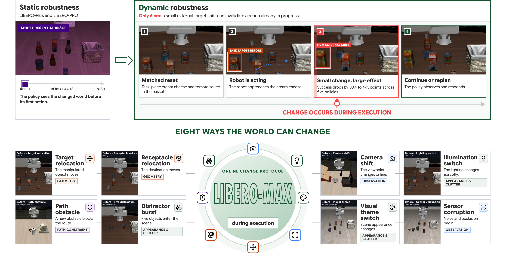
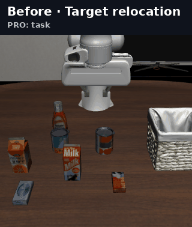
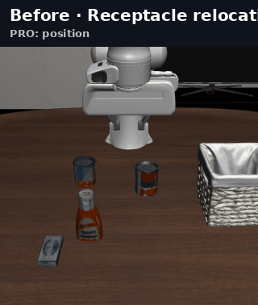
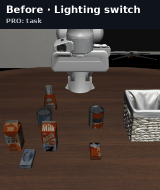
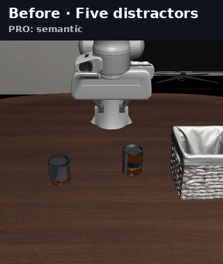
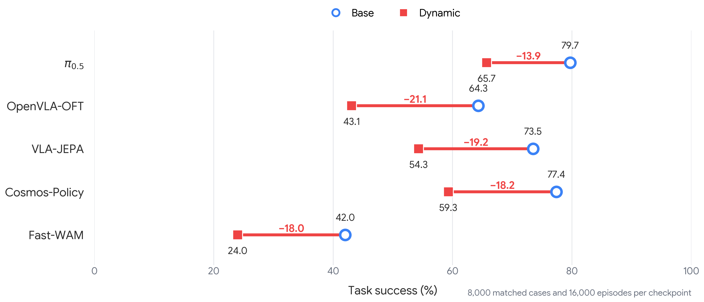
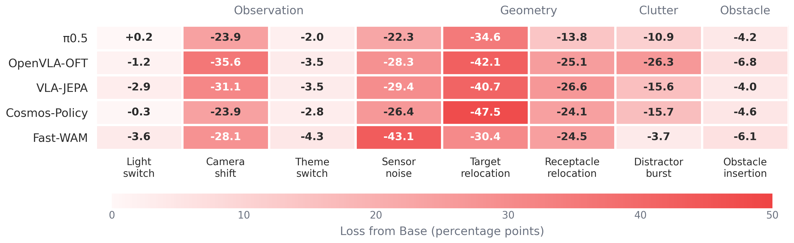

STATIC ROBUSTNESS
The shift is visible before action begins.
shift→observe→act
LIBERO-Plus and LIBERO-PRO test generalization from a shifted reset.
DYNAMIC ROBUSTNESS FOR ROBOT POLICIES · 2026
LIBERO-MAX changes the environment after a robot has already begun acting. Every Dynamic rollout is matched to a Base control with the same task, reset, policy seed, and action prefix.

FIG. 01 Static benchmarks shift the world at reset. LIBERO-MAX changes it during execution.
the evaluation gap
The paired design isolates the effect of an online change from initial task difficulty.
STATIC ROBUSTNESS
LIBERO-Plus and LIBERO-PRO test generalization from a shifted reset.
DYNAMIC ROBUSTNESS
LIBERO-MAX tests detection, correction, and replanning during execution.
the frozen main track
1,000 matched cases per event type

The manipulated object moves after approach.

The destination moves while the task stays feasible.

The viewpoint changes while the robot is acting.

Noise and occlusion begin after execution starts.

Scene lighting changes abruptly.

The scene appearance changes online.

Five irrelevant objects enter the active support.

A new obstacle blocks the approach region.
main result
Full 8,000-pair evaluation. Success rate is measured over all 16,000 scored rollouts per checkpoint.
percentage-point drop
under changes during execution across all five evaluated policies.
| Family | Policy | Base | Dynamic | Gap |
|---|---|---|---|---|
| VLA | π0.5 | 79.7 | 65.7 | −13.9 |
| VLA | OpenVLA-OFT | 64.3 | 43.1 | −21.1 |
| VLA + WM | VLA-JEPA | 73.5 | 54.3 | −19.2 |
| WAM | Cosmos-Policy | 77.4 | 59.3 | −18.2 |
| WAM | Fast-WAM | 42.0 | 24.0 | −18.0 |
High Base success does not guarantee adaptation after an online change. No architecture family dominates across all events, and each policy exposes a distinct failure profile.

where policies break
Relocation, viewpoint change, and sensor corruption reveal shared weaknesses. Appearance robustness still does not predict recovery from geometry changes.

benchmark lineage
MAX contributes the online-change protocol, paired controls, event runtime, and evaluation layer.
Tasks, demonstrations, simulator, and standard success predicates.
Static visual, scene, and observation variations.
Static semantic, geometric, and visual substrate variations.
One feasible change occurs after the shared action prefix.
We thank the LIBERO, LIBERO-Plus, and LIBERO-PRO teams for releasing the task suites, datasets, and runtime code that make this benchmark possible. Upstream repositories remain external dependencies and retain their own licenses. Read the full provenance statement ↗
open benchmark
The frozen manifest, source revisions, integrity checks, evaluation launchers, and 203 automated tests are released with the benchmark.
$ git clone https://github.com/yunbeizhang/LIBERO-MAX.git
$ cd LIBERO-MAX
$ python3 -m venv .venv
$ source .venv/bin/activate
$ pip install -e .
$ make validate-max8000
$ make test